Tadasana(Mountain Pose):
The Mountain Pose helps strengthen the heart, and also adds flexibilty to the body.
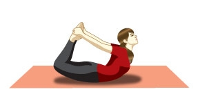
Vrikshasana(Tree Pose):
The Tree Pose calms and brings equilibrium to the mind, and leads to steady and healthy function
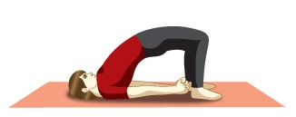
Utthita Hastapadasana(Extended Hands and Feet Pose): This yoga posture requires more focus and strength to balance.
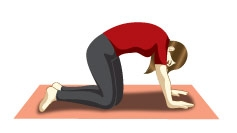
Trikonasana(Triangle Pose): This is a heart-opening standing yoga posture, designed to promote cardiovascular exercise. The chest expands, when breathing deeply and rhythically. It also increases stamina.
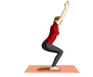
Veerabhadrasana(Warrior Pose): The Warrior Pose imporoves balance in the body and increasses stamina. It also releases stress
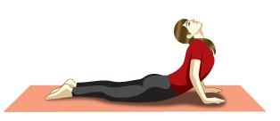
Utkatasana(Chair Pose): In this yoga posture, you can feel the heart and respiration rate increases. It increases heat in the body and strenghtens it.
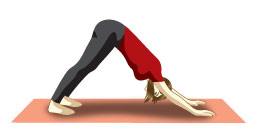
Marjarisana(Cat Pose): This yoga posture is a welcome relief after the Chair pose, as it allows the heart rate to settle, and become soft and rhythmetic again.
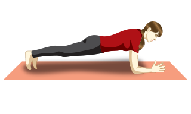
Adho Mukho Svanasana(Downward facing dog pose): This yoga posture is used as a resting position as it calms the system and energies the body.
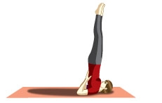
Bhujangasana(Cobra Pose): This yoga posture increases the stretch to the chest, and requires more strength and stamina than the Sphinx pose.
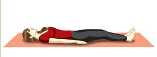
Dhanurasana (Bow pose): The Bow pose opens and strengthens the heart region. It is stimulating and greatly stretches the whole body.
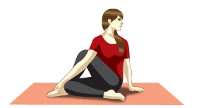
Setu Bandhasana (Bridge pose): Less demanding than the Bow pose, the Bridge pose facilitates deep breathing and opens and improves blood flow to the chest region.
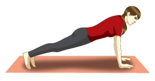
Salamba Sarvangasana (Half Shoulder stand): The Half shoulder stand pacifies, activates the parasympathetic nervous system and creates space in the chest. It is a restful and rejuvenating posture.
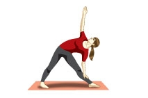
Ardha Matsyendrasana(Sitting Half Spinal Twist): The Sitting half spinal twist works on the whole spine, and opens the chest sides alternately.
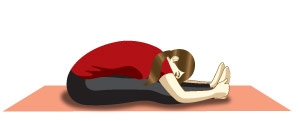
Paschimottanasana (Two-legged forward bend): Serving as a resting posture, the seated forward bend brings the head lower than the heart, facilitating the reduction of the heart rate and respiration, while allowing the system to rest.
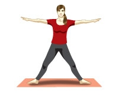
Dandasana(Stick Pose): Countering the previous postures, this yoga posture facilitates good posture, strengthens the back and, at the same time, stretches the shoulders and chest.
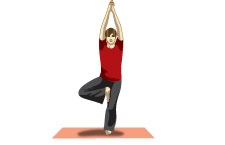
Dolphin Pose: The Dolphin pose is a little more demanding than Downward facing dog pose as it helps by increasing stamina and strengthening the upper body in preparation for more heart opening postures.
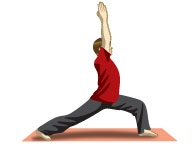
Shavasana(Corpse Pose): Deep rest is the counter pose for all yoga postures, as it allows the body and breath to make the subtle adjustments necessary for overall health system.